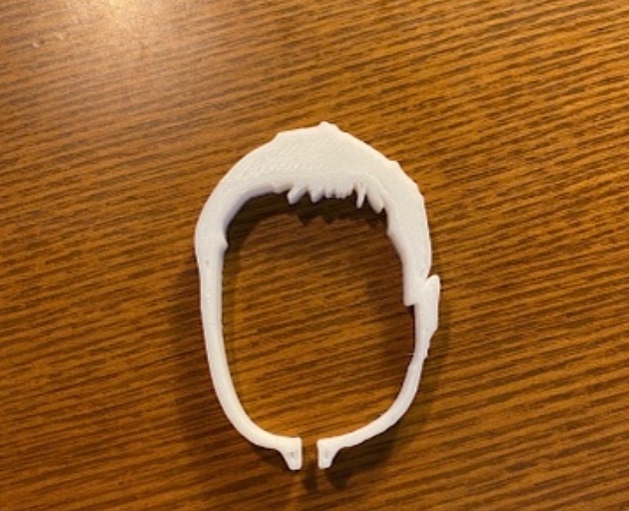
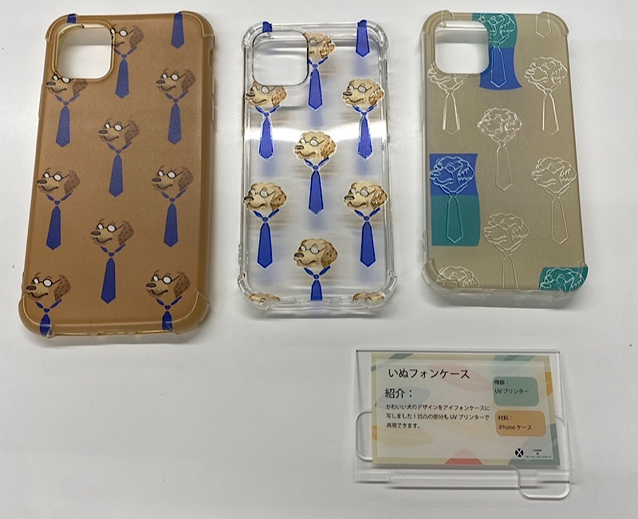
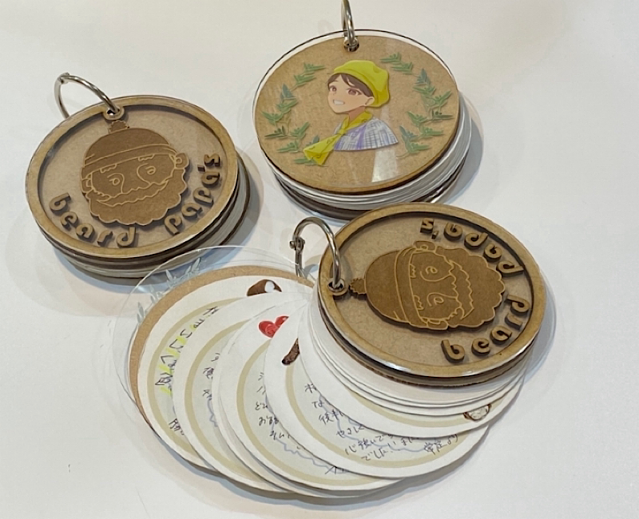

道用ゼミ 前期 XBP振り返り
XBP振り返り
研究テーマに進む前に、1年半のXBPを振り返る。
デジタルファブリケーションでは、直感的なデザイン性をテーマに「人々の心を動かすモノづくり」を求めた。
デザイン演習ⅢⅣ・ⅤⅥでは、これに機能性を加え、感覚と利便性の調和のとれた革新的なもので、
「人々の行動を変化させるモノづくり」を目指した。
けれど、デザイン演習は考える授業だったかもしれないが、考えたモノは自分の中の空想で終わった気がした。
自分の想像したとおりのものを実現しないとつまらなかった。
デジタルファブリケーション
- 
- 


- 

デジタルファブリケーションやillustratorを通してグッズ制作を行ってきました。
これらのグッズは１人１人をイメージして制作した贈り物にあたります。
１人に対して喜ばれるデザインをシチュエーションにそって表現する、
これを「贈与のためのモノづくり」と定義しています。
デザイン演習ⅢⅣ
デザイン演習ⅢⅣでは、IoTを使ったサービスプロトタイピングを行った。
テーマである「目に見えないものを目に見える形で表現する」はとてもワクワクするものであったが
最終的にただの光るサボテンが出来上がり、不甲斐ない結果となった。
テーマはすごく良かった。異質な素材を組み合わせるデザインの視点も悪くなかった。
けれど、途中、本当にできるのか？と疑ったし、Arudinoはまかせっきり。完成までの道のりが見えないから、他責で投げやりだった。
この結果は、テーマが非現実的だったからではなく、誰も完成できると信じてなかったからだと感じた。
デザイン演習ⅤⅥ


デザイン演習ⅤⅥでは、3Dプリンタに関するビジネスプランを考えた。
この授業では今の自分の考えがどれだけ通用するのか知る機会だったので、より情熱を注いだ。
けれど評価は１番ひどかった。
講評では、今この市場が広がらない理由を掘り下げるべき。本当にターゲットは学生でいいのかという意見を頂いた。
良くなかった点は、今回のビジネスプランは"自分がどうしたらやりたいと思うか"にのみ基準をあてていたことと、
成長推移や損益分岐点は現実的なものにしたが、調査に基づいた需要の数値とそれによる金額設定をしていなかったこと。
それと、発表の準備をしっかりしなかったこと。伝えたいことが伝わらず、もったいなかった。それが１番悔しかった。
どれだけいい考えでも全部伝え方に集約していたから、これからはそこまで手を抜かない。
あと、情報を集めることも。